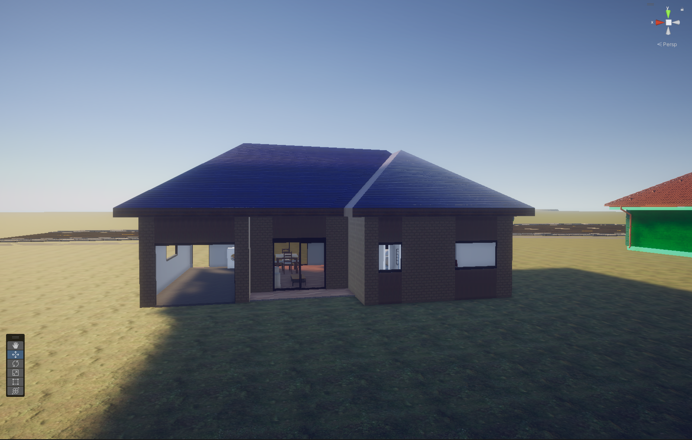
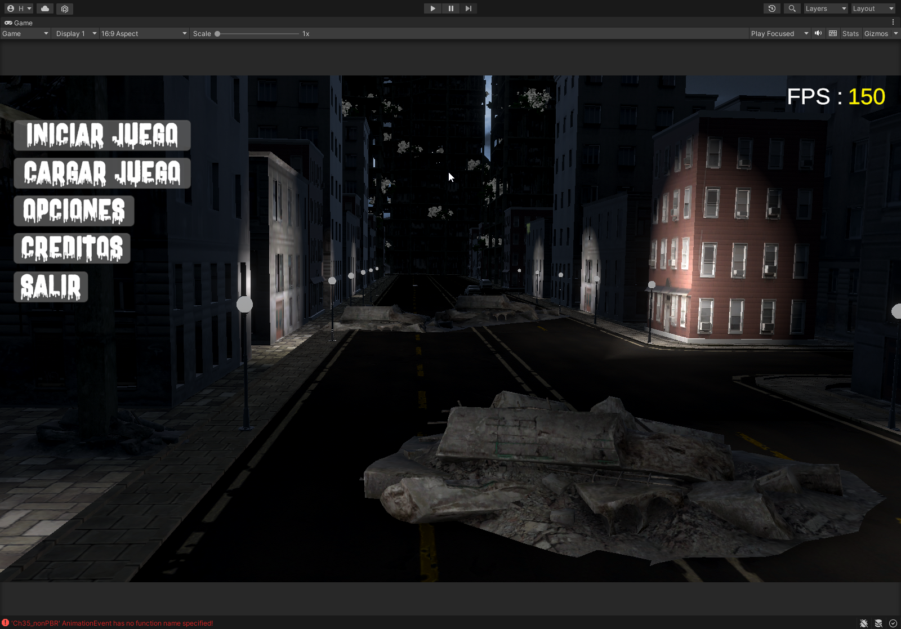
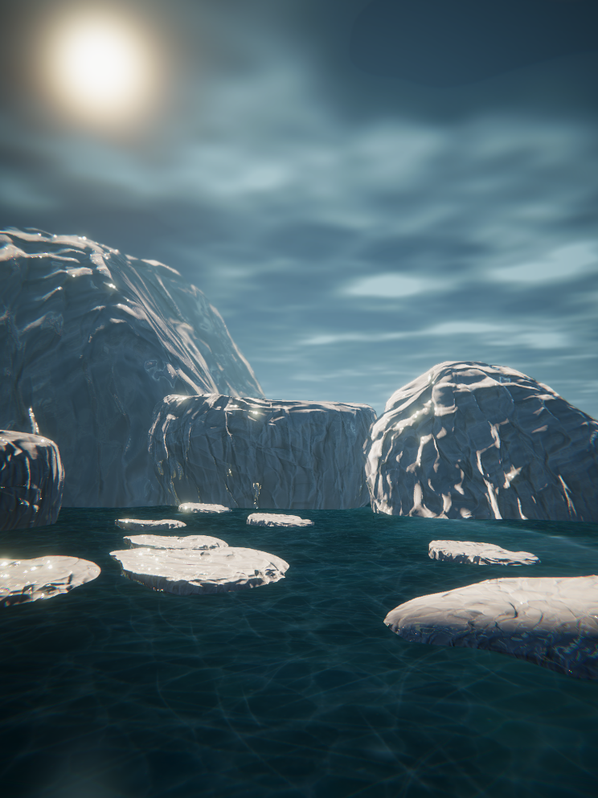
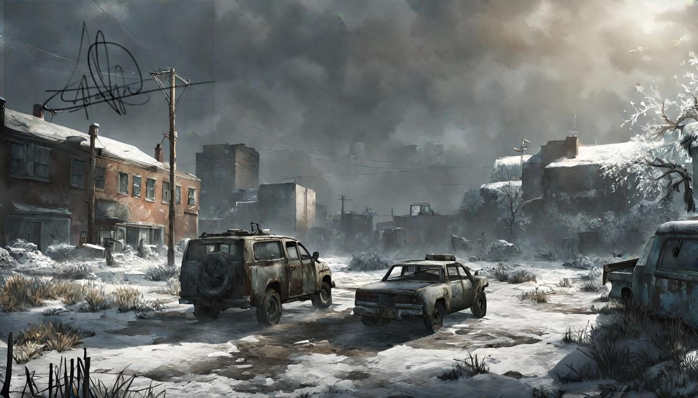
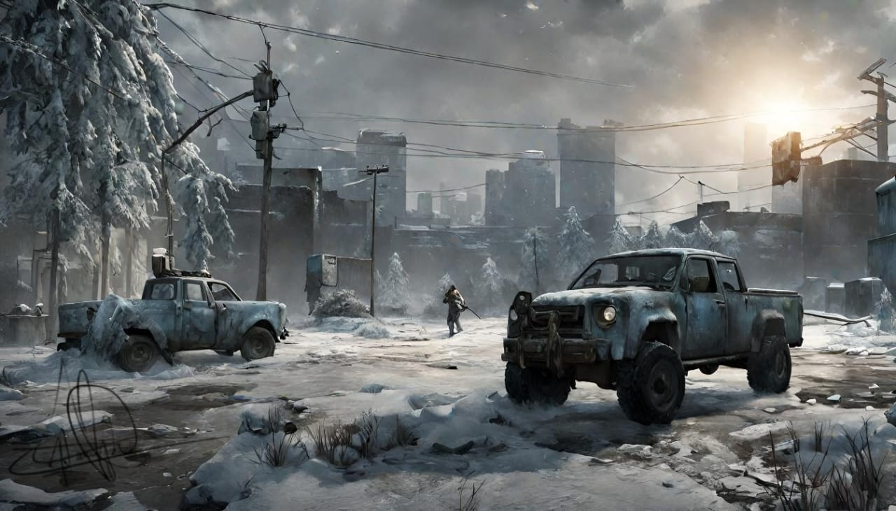
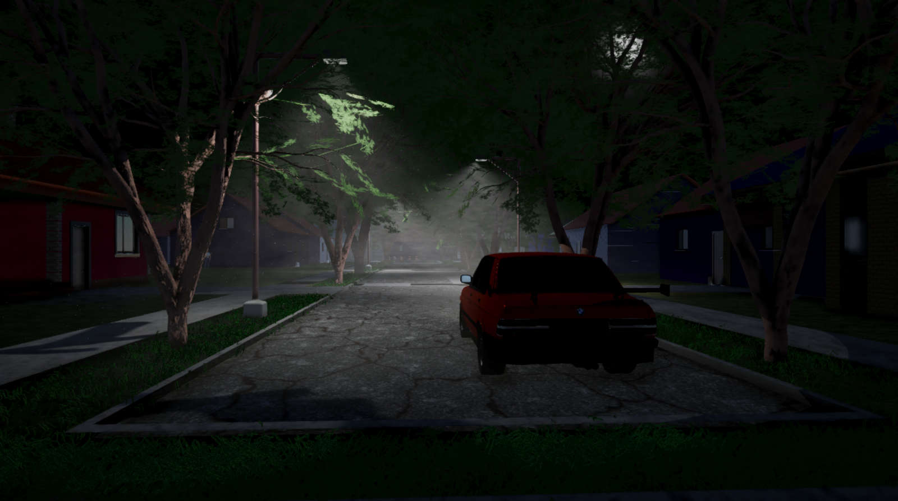

TURTLE GAMES STUDIO Presenta el Desarrollo de Frost Apocalypse en uno de los primeros estudios de desarrollo de videojuegos en Nicaragua.
¡Bienvenidos al blog de desarrollo de Frost Apocalypse! En este emocionante viaje, Turtle Games Studio comparte los secretos detrás del desarrollo de Frost Apocalypse, su segundo juego creado en Nicaragua.
En este mundo postapocalíptico, los jugadores se sumergirán en una narrativa envolvente y desafíos emocionantes. Frost Apocalypse es la culminación de meses de arduo trabajo, creatividad y pasión por los videojuegos.
Descubre los desafíos que enfrentó el equipo de desarrollo, desde la creación de gráficos impresionantes hasta el diseño de niveles intrigantes. Explora las inspiraciones detrás de la historia y cómo han dado vida a un universo único.
Este blog será tu ventana al proceso creativo, mostrando conceptos detrás de escena, avances exclusivos y momentos destacados del desarrollo. Únete a nosotros mientras compartimos nuestra visión y celebramos los logros alcanzados en este viaje apasionante.
Capitulo-1: "Idea principal"
La idea del juego surgió en 2022, cuando un joven de 14 años anhelaba crear mundos virtuales y era fan de juegos como The Forest, The Last of Us, Resident Evil y The Walking Dead, entonces este joven un dia vio un documental en internet sobre millones de virus en los icebergs congelados desde hace millones de años, entonces la idea era crear una historia donde el problema es que el no cuidar el medio ambiente, la quema de basura y bosques, tala de arboles poco a poco comenzo a aumentar el calentamiento global y a causa de estos los glaciares se derritieron y liberaron un virus prehistórico capaz de controlar el cerebro humano y convertir a las personas en seres violentos y aterradores, entonces el comenzo a estudiar programación modelado y diseño gráfico y haci comenzo con el desarrollo del juego.
Captura del mapa inicial

captura del mapa inicial con URP

captura del mapa inicial, casa creada con probuilder
Captura del menu inicial
Modelado de casas para el juego
Video del desarrollo del juego
Estas son las primeras fases del juego como pueden ver esta en una fase muy temprana, pero seguire esforzandome para lanzar el juego lo mas pronto posible.
Capitulo-2: "Historia del Juego"
Se preguntaran ¿que es este juego cual es su historia?
es un juego que se desarrolla en un mundo afectado por el cambio climático y la liberación de un antiguo virus prehistórico. La trama sigue a David, un hombre que debe proteger a su hijo Max mientras luchan por sobrevivir en un entorno hostil lleno de infectados, saqueadores y fuerzas militares. A medida que enfrentan desafíos, la historia explora la relación entre padre e hijo, la búsqueda de refugio y la lucha por la supervivencia en un mundo transformado. El juego está diseñado para ofrecer una experiencia emocional, con momentos de tensión, acción y reflexión.
Historia y personajes principales
David

Max

Icebergs
Capitulo-3: "arte conceptual del Juego"
A continuación les mostrare arte conceptual de mi juego.
arte conceptual 1
arte conceptual 2
Capitulo-4: "primeras mecánicas y controles"
en esta fase ya tengo algunas mecánicas programadas en las cuales se encuentran las mecánicas de caminar, correr, agacharse, arrastrarse por el suelo, saltar obstáculos,subir a plataformas, sistemas de combate y mucho mas.
Video del desarrollo del juego mecánicas
Video del desarrollo del juego mecánicas
cabe recalcar que el todos los sistemas de movimientos y mecánicas las programo yo mismos por lo tanto no uso ningun tipo de assets o herramienta.
Capitulo-5: "Primeras zonas del mapa"
en esta fase ya tenemos la conceptualización de la primera zona de juego pero en estado pre-alpha las zonas no tienen muchos detalle solo es para probar si funcionan bien o no. también hemos estado modelando los recursos en blnder, nuestros juegos se estara desarrollando en unity 3d y utilizaros el canal de renderizado URP.
primeras zonas
primeras zonas

Video de las primeras zonas
cabe recalcar que el aun estan en una fase muy temprana y trabajaremos para terminar lo mas pronto posible el mapa detallado y listo para implementar la historia.